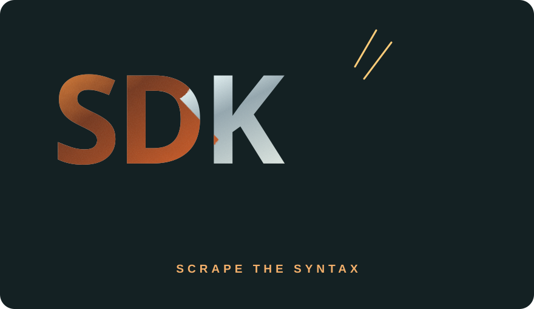
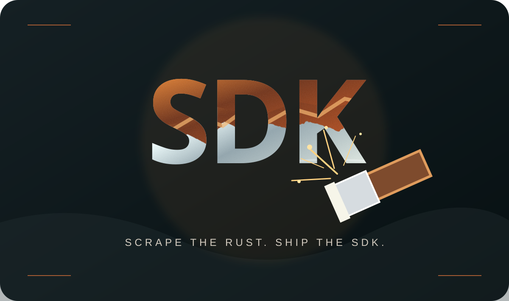
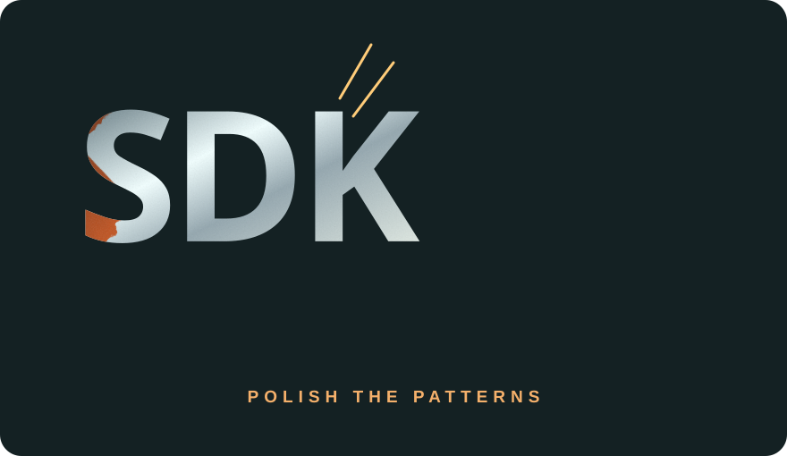
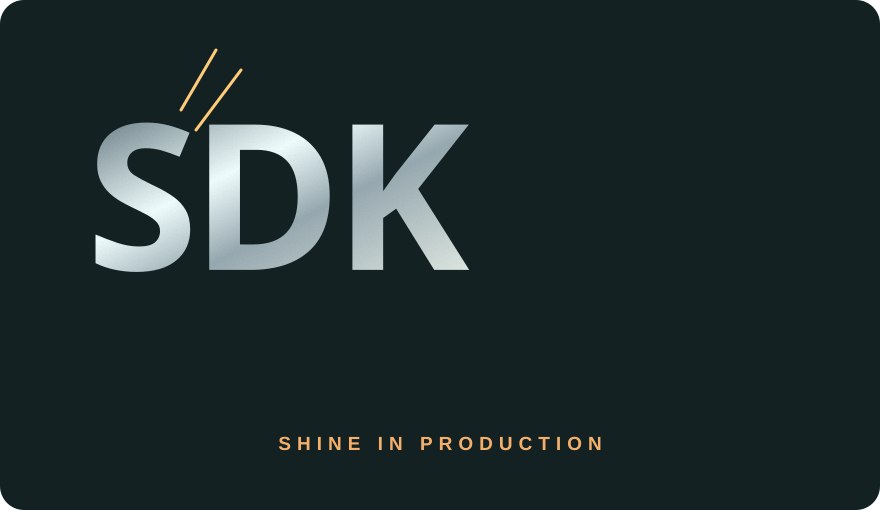

STEP 01 / SCRAPE
Knock off the old syntax
Refresh TypeScript contracts, plugin manifests, typed operations, and the occasional semicolon-shaped regret.
interfaces · types · validationA VERY SERIOUS EXPERIMENT IN UNSERIOUS MAINTENANCE
I've built SDKs before. Then life happened, meetings multiplied, and a fine layer of technical oxidation appeared. Rust-eze is my hands-on TypeScript workout: a universal plugin SDK that scrapes the rust away—without scraping away the architecture.

Somewhere between shipping production apps and remembering what a dependency injection container actually does, my SDK knowledge started collecting dust. Not the charming vintage kind. The “wait, which lifecycle hook is that?” kind.
So I built a refresher with real interfaces, real plugin lifecycles, and real TypeScript. No magic wand. No questionable miracle spray. Just a solid architecture and a suspicious amount of coffee.
One layer of SDK corrosion removed at a time.

Refresh TypeScript contracts, plugin manifests, typed operations, and the occasional semicolon-shaped regret.
interfaces · types · validation
Register plugins, toggle lifecycles, dispatch events, and pretend the first stack trace was a planned feature.
registry · lifecycle · events
Exercise the architecture through an interactive sandbox. A real MySQL database now backs the full-stack mode. Turns out databases like a little attention too.
plugins · operations · testing*Also no actual physical rust removal implied. Your car is on its own.
Switch between a browser-only simulation and real MySQL-backed API operations.
Toggle plugin lifecycles, just like in the full SDK.
// Waiting for an operation... much like my knowledge of SDKs in 2024.
Dates: MM/DD/YYYY HH:mm MST (UTC−07:00)
The logbook. A developer's best friend, after coffee.
Browser mode is an offline simulation. Select Live API + MySQL for real persisted notes and the actual SDK plugin registry. Live changes require the admin key; do not expose the key on a public site.
Behind the shiny landing page is the real Rust-eze SDK project: a TypeScript plugin registry, lifecycle management, a Fastify REST API, three working plugin adapters, a React admin dashboard, and standalone macOS deployment.
Ask the SDK for exactly the fields you want. Real plugin status, SDK events, MySQL notes and lifecycle mutations—all on POST /graphql. If only all interviews were this strongly typed.
query {
plugins {
id
name
state
}
}Same registry. New vocabulary. No rust.Some developers collect stamps. I collect HTTP status codes. Grab the ready-to-import Postman collection to test the website, React dashboard, plugin lifecycles, MySQL notes, storage and simulated notifications.
The demo collection uses https://appdevdesign.com:8123 and sample API key booya-admin-key. Match ADMIN_API_KEY on your server before running authenticated tests. The sample key is public and intended only for this demo.
.env and restart Rust-eze, or update the Postman variable.The goal isn't to pretend I never forgot a thing. It's to prove I can pick the tools back up, build something useful, and leave the SDK cleaner than I found it.
One more lap around the test bench ↗